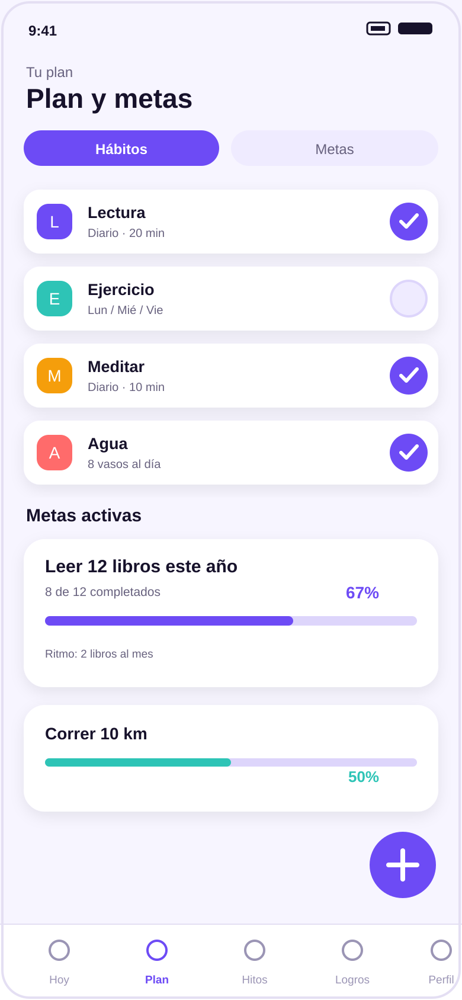

US-01 · Pulse Clay · Demo
Hábitos que se sienten tuyos

01 / EN CASA
Hoy, sin fricción
Racha de 12 días, tres de cinco hábitos marcados y check-in de bienestar en un solo vistazo.

02 / PLAN
Plan y metas
Hábitos ordenados por tramo horario y metas con progreso visible. La meta de lectura va en 67 %.

03 / TOP HITOS
Hitos con memoria
Un héroe con foto y una rejilla de hitos desbloqueados. Cada hito se puede compartir en 1080 × 1080.

04 / VITRINA
Logros que aguantan
Nivel 4, calendario de la semana, medallas y congelación de racha dos veces al mes.
Pulse Clay
APK DISPONIBLE · WHATSAPP +57 313 290 4451
USKEIN STUDIO · SOFTWARE LOCAL-FIRST